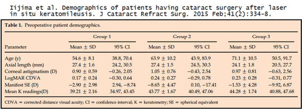
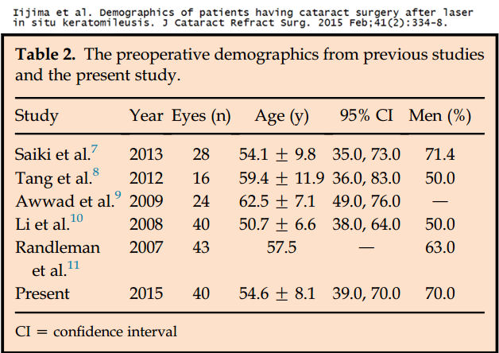
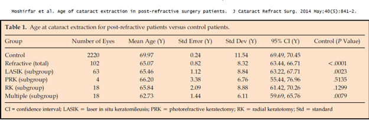

Если у вас развилась ранняя катаракта после LASIK, вам предстоит операция по удалению катаракты после LASIK или у вас был плохой исход операции по удалению катаракты после LASIK, мы приглашаем вас присоединяйтесь к обсуждению на FaceBook
Большинство операций на глазах, включая LASIK, сопряжены с риском развития катаракты. Отдельные сообщения о катарактах вскоре после LASIK, даже у относительно молодых пациентов, указывают на причинно-следственную связь. Более того, капли steriod, которые обычно назначают после операции LASIK, могут ускорить развитие катаракты.
Пациентам с признаками катаракты до операции LASIK не следует проводить операцию LASIK, поскольку зрение может быть скорректировано с помощью интраокулярной линзы, используемой при операции по удалению катаракты. По иронии судьбы, после операции LASIK измененная поверхность роговицы приводит к неточному измерению оптической силы интраокулярной линзы при операции по удалению катаракты. Это означает, что пациенты, перенесшие операцию LASIK, у которых позже развилась катаракта, могут сразу после операции по удалению катаракты снова надеть очки или, что еще хуже, подвергнуться рискам, присущим многократным операциям.
Что вам следует делать, если вы перенесли операцию LASIK? Распечатайте эту форму (K-card) и попросите вашего хирурга заполнить его с помощью LASIK, а затем положите его вместе с вашими важными записями для сохранности. Не откладывайте , поскольку в некоторых штатах медицинские записи могут быть уничтожены по истечении пяти лет. Подробнее о важности K-карты читайте ниже.
Вам предстоит операция по удалению катаракты после LASIK? Запросите у хирурга вашу медицинскую карту LASIK (в качестве альтернативы вы можете распечатайте эту форму (K-card), и попросите вашего хирурга выполнить процедуру LASIK) и возьмите их с собой к хирургу по удалению катаракты. предупреждение: Не поддавайтесь маркетинговой шумихе вокруг "мультифокусных", "аккомодирующих" или "премиальных" интраокулярных линз. Пациенты, которые ранее подвергались лазерной коррекции зрения, могут быть недовольны своим зрением при использовании этих так называемых "линз премиум-класса". Хирург по удалению катаракты может попытаться ПЕРЕПРОДАВАТЬ вы покупаете линзы премиум-класса, чтобы положить больше денег в его карман, но, возможно, вам больше понравятся обычные линзы от катаракты.
Если у вас развилась ранняя катаракта после LASIK или если у вас был плохой исход операции по удалению катаракты из-за предшествующей операции LASIK, вам следует отправьте отчет о медицинском наблюдении с Управлением по санитарному надзору за качеством пищевых продуктов и медикаментов в режиме онлайн. Кроме того, вы можете позвонить в Управление по санитарному надзору за качеством пищевых продуктов и медикаментов по телефону 1-800-FDA-1088, чтобы сообщить об этом по телефону. бумажный бланк и либо отправьте его по факсу на номер 1-800-FDA-0178, либо отправьте по почте на адрес, указанный внизу страницы 3, либо загрузите Мобильное приложение MedWatcher для сообщения о проблемах с LASIK в FDA с помощью смартфона или планшета. Ознакомьтесь с образцом Отчеты о травмах, полученных с помощью LASIK в настоящее время находится на рассмотрении в FDA.
Жидкость на границе раздела фаз LASIK, помутнение роговицы после сложной операции по удалению катаракты
Касам Б., Кожлюк Ю., Бурку А. Синдром межклеточной жидкости, возникающий вследствие эндотелиальной недостаточности вследствие токсического синдрома переднего сегмента после операции по удалению катаракты. Eur J Офтальмологический журнал. 11 сентября 2018:1120672118800241. doi: 10.1177/1120672118800241.
цель:
Представить случай перенесенного ранее лазерного кератомилеза in situ с синдромом поверхностной жидкости, вторичным по отношению к токсическому синдрому переднего сегмента после операции по удалению катаракты. Ссылка на реферат
ОТЧЕТ ПО ДЕЛУ:
В нашу клинику обратилась 52-летняя женщина с жалобами на ухудшение зрения на правом глазу в течение 18 месяцев после операции по удалению катаракты. В послеоперационном периоде у нее был диагностирован токсический синдром переднего сегмента, который прошел через 3 дня. В анамнезе у нее была операция по удалению лазерного кератомилеза 15 лет назад. При обследовании правого глаза с помощью щелевой лампы было обнаружено помутнение роговицы, ограниченное лоскутом, удаленным лазерным кератомилезом. У пациента был диагностирован синдром межклеточной жидкости, вторичный по отношению к декомпенсации эндотелия вследствие токсического синдрома переднего сегмента. Была выполнена Десцеметова мембранно-эндотелиальная кератопластика, а также лазерное удаление кератомилеза на всю толщину лоскута на правом глазу пациента. Жидкость рассосалась через 1 неделю, и острота зрения быстро улучшилась.
заключение:
Этот случай показывает важность постановки диагноза и определения конкретной этиологии синдрома поверхностной жидкости даже спустя годы после операции лазерного кератомилеза in situ, когда функция эндотелиальных клеток была нарушена из-за каких-либо факторов, таких как внутриглазная хирургия и ее осложнения.
Примечание редактора: Относительно молодой возраст этой женщины на момент операции по удалению катаракты (50-51 год) позволяет предположить причинно-следственную связь с предыдущей операцией LASIK.
У 36-летней женщины обнаружилась доклиническая катаракта через 3 года после, казалось бы, успешной операции Lasik
36-летняя женщина обратилась с жалобами на ухудшение зрения спустя 1 год после перенесенной 3 года назад без осложнений операции LASIK. Топография и аберрометрия роговицы были в пределах нормы. Несмотря на то, что хрусталик при исследовании с помощью щелевой лампы был морфологически нормальным, были обнаружены повышенные HOAs и плотность хрусталика. Поскольку катарактальных изменений не было, пациенту было рекомендовано регулярное наблюдение. Год спустя у пациента развились изменения хрусталика, сопровождавшиеся дальнейшим увеличением аберраций и ухудшением рассеяния при денситометрии... В этом отчете показано, как доклиническая катаракта может имитировать регрессию после операции LASIK с изменением сферической и цилиндрической формы глаза. Это может привести к тому, что пациентам потребуется повторная коррекция зрения на глазах, где первичная патология связана с хрусталиком.
Исследование показало, что процедура Lasik приводит к удалению катаракты на десять лет раньше, чем обычно
Есилирмак и др. Влияние LASIK на сроки проведения операции по удалению катаракты . J Рефракционная хирургия. 1 мая 2016 г.;32(5):306-310.
Абстрактный
цель:
Сравнить возраст на момент операции по удалению катаракты у пациентов, перенесших операцию LASIK с использованием микрокератома, и у лиц, сопоставимых по длине осевой поверхности, степени выраженности катаракты и остроте зрения, но не перенесших рефракционных операций в анамнезе.
методы:
Обзор ретроспективных карт пациентов, перенесших удаление катаракты в период с сентября 2013 по март 2015 года в Глазном институте Баск-Палмера. В анамнезе пациентов были операции LASIK с использованием микрокератома или отсутствие хирургических вмешательств на глазу. Оценивали скорректированную остроту зрения вдаль (CDVA) до и после удаления катаракты, некорректированную остроту зрения вдаль (UDVA) до удаления катаракты, пол, длину по осевой линии и степень выраженности катаракты, а также возраст на момент проведения LASIK, возраст на момент удаления катаракты и промежуток времени между проведением LASIK и появлением катаракты извлечение.
результаты:
Пятьдесят глаз из 38 пациентов были включены в группу LASIK, а 155 глаз из 136 пациентов были включены в контрольную группу. Не было выявлено существенных различий между этими группами в отношении пола (P = 0,87), CDVA до удаления катаракты (P = 0,11), UDVA до удаления катаракты (P = 0,09), длины осевой области (P = 0,67) и степени выраженности катаракты (P = 0,46). Средний возраст на момент удаления катаракты пациентов в группе LASIK и контрольной группе составил 64± 7 и 73± 8 лет соответственно (P < 0,005). Были обнаружены отрицательные корреляции между возрастом на момент удаления катаракты и осевой длиной в группах LASIK и контрольной группе (r = -0,18, P = 0,20 против r = -0,36, P =0,01 соответственно).
выводы:
Использование микрокератома LASIK, по-видимому, коррелирует с более ранней экстракцией катаракты. Пациенты, перенесшие операцию по удалению катаракты с помощью микрокератома в анамнезе, перенесли операцию по удалению катаракты на десять лет раньше, чем пациенты с аналогичными демографическими и офтальмологическими характеристиками.
Исследование показало, что пациенты, перенесшие операцию по удалению катаракты одиннадцатью годами ранее, имеют худшие результаты
Мэннинг и др. С результаты операций по удалению атаракты при рефракционной хирургии роговицы на глазах: исследование Европейского регистра качественных результатов в области катарактальной и рефракционной хирургии . J Рефракционная хирургия катаракты. Ноябрь 2015 г.;41(11):2358-65.
Абстрактный
цель:
Проанализировать визуальные результаты после операции по удалению катаракты у пациентов, ранее перенесших рефракционную операцию на роговице.
установка:
Клиники хирургии катаракты в 18 странах Европы и Австралии.
дизайн:
Изучение базы данных.
методы:
Случаи удаления катаракты с помощью рефракционной хирургии роговицы глаз (случаи рефракции роговицы) были выявлены из всех случаев удаления катаракты, зарегистрированных в базе данных Европейского регистра качественных результатов для катарактальной и рефракционной хирургии за 5-летний период. Были проанализированы предоперационные и послеоперационные измерения и тенденции с течением времени.
результаты:
Из 807 220 случаев удаления катаракты в 1229 случаях (0,15%) наблюдалась рефракция роговицы. Со временем количество случаев рефракции роговицы значительно увеличилось (P < 0,001). Пациенты с рефракционной патологией роговицы были моложе, чем пациенты без рефракционной хирургии роговицы (нерефракционные пациенты) (62,9 года против 74,0 лет; P < 0,001), но имели одинаковую среднюю остроту зрения с поправкой на расстояние до операции и после операции (CDVA) (дооперационный LogMAR 0,44[6/16] для обоих [P = 0,286]; послеоперационный LogMAR 0,44[6/16] для обоих [P = 0,286]). 0,06[6/7] для обоих [P = .245]). Послеоперационный показатель CDVA был хуже, чем дооперационный, у 35 (4%) пациентов с рефракцией роговицы и у 8999 (1,5%) пациентов без рефракции (P < 0,001). В целом, у 74 (8,5%) из 873 пациентов с рефракцией роговицы по сравнению с 16 566 (2,8%) /584 496 пациентами без рефракции, перенесшими операцию по удалению катаракты, дооперационный показатель CDVA по LogMAR был равен 0,0[6/6] или выше (Р <0,001). У девятнадцати (54,3%) из 35 пациентов с нарушением рефракции роговицы, у которых послеоперационный показатель CDVA был хуже, дооперационный показатель CDVA по шкале LogMAR составлял 0,0 (6/6) или выше.
заключение:
С 2008 года все чаще сообщалось об операциях по удалению катаракты у пациентов с рефракционной хирургией роговицы. У этих пациентов дооперационный показатель CDVA был таким же, как у пациентов без предыдущих операций по коррекции рефракции роговицы, но они были моложе и имели более высокий риск ухудшения послеоперационного показателя CDVA, особенно если дооперационный показатель CDVA составлял LogMAR 0,0(6/6) или выше.
Исследование показало, что использование Lasik приводит к удалению катаракты в среднем на 10 лет раньше
Иидзима и др. Демографические данные пациентов, перенесших операцию по удалению катаракты после лазерного кератомилеза in situ . J Рефракционная хирургия катаракты. Февраль 2015;41(2):334-8.
Выдержки из полного текста:
"В настоящем исследовании возраст пациентов на момент операции по удалению катаракты на глазах после операции LASIK был примерно на 10 лет моложе, чем на глазах с одинаковой осевой длиной (AL), и примерно на 15 лет моложе, чем в общей популяции...
"Во всех предыдущих исследованиях и в текущем исследовании средний возраст на момент операции по удалению катаракты на глазах после операции LASIK составлял от 50 до 63 лет. На глазах после операции LASIK операцию по удалению катаракты пришлось провести раньше, чем мы ожидали; все еще трудно точно определить мощность ИОЛ на таких глазах...
"В заключение, в этом исследовании возраст пациентов на момент операции по удалению катаракты в группе после операции LASIK был примерно на 10 лет моложе, чем в группе сравнения, и примерно на 15 лет моложе, чем в общей популяции.";
В таблице ниже показан средний возраст пациентов, перенесших операцию по удалению катаракты после операции Lasik (группа 1), - 54,6 года, средний возраст пациентов с длиной осей, соответствующей длине глаз, перенесших операцию по удалению катаракты после операции Lasik (группа 2), - 63,9 года, и средний возраст всех пациентов, перенесших операцию по удалению катаракты (группа 3). 71,1 года.

В таблице ниже показан возраст пациентов, перенесших операцию по удалению катаракты после LASIK в этом исследовании и пяти предыдущих исследованиях, со средневзвешенным возрастом 55,8 лет. Это на 15,3 года меньше, чем средний возраст пациентов 3-й группы из всей исследуемой популяции пациентов с катарактой.

Важность получения K-карты после операции LASIK
A письмо 21.11.2009 г. в Управление по санитарному надзору за качеством пищевых продуктов и медикаментов было отправлено 126 подписей заинтересованных граждан с просьбой выдать заключение LASIK о состоянии общественного здравоохранения. Из письмо :"Как уже говорилось, операция LASIK приводит к неправильному расчету мощности имплантации хрусталика для будущей операции по удалению катаракты. В 2008 году Управление по санитарному надзору за качеством пищевых продуктов и медикаментов объявило на своем веб-сайте, что оно "сотрудничало с Американской академией офтальмологии в разработке карта которые врачи могут заполнить с помощью измерений зрения пациента перед операцией LASIK. "К сожалению, хирурги LASIK обычно не предоставляют пациентам K-карта . Законодательство штата требует от медицинских работников хранить медицинские записи, однако во многих штатах медицинские записи могут быть уничтожены по истечении пяти лет. Большинство пациентов, проходящих процедуру LASIK в Соединенных Штатах, не знают о необходимости получения результатов офтальмологического обследования перед процедурой LASIK. Поэтому Управление по санитарному надзору за качеством пищевых продуктов и медикаментов обязано включить эту информацию в рекомендации общественного здравоохранения, касающиеся глазной хирургии LASIK."Управление по санитарному надзору за качеством пищевых продуктов и медикаментов никогда не подтверждало получение этого письма и продолжало игнорировать эту важную проблему общественного здравоохранения.
Несмотря на то, что хирурги LASIK обычно не в состоянии предоставить пациентам K-карта профессиональные организации хирургов LASIK подчеркивают его важность. На своем веб-сайте Международное общество рефракционной хирургии (ISRS) сообщает пациентам: "; Крайне важно вести учет информации до и после операции, которая может понадобиться при проведении будущих офтальмологических операций, таких как удаление катаракты. Карточка К является неотъемлемой частью медицинской карты пациента, перенесшего рефракционную операцию ." Ссылка на источник Обращаясь к хирургам LASIK, организация заявляет: "; Пациентам LASIK следует предоставлять "К-карту", в которой записаны данные предоперационной кератометрии и рефракции пациента. Часто бывает трудно отследить эти важные данные спустя годы, когда пациенту требуется операция по удалению катаракты или дополнительная офтальмологическая помощь. Существует множество сложных формул для расчета мощности ИОЛ, но у всех них есть один общий фактор - они лучше всего работают, когда у вас есть данные предоперационной кератометрии пациента и его рефракции ." Ссылка на источник
Прочтите, что один окулист написал коллегам-окулистам по этому поводу: "; Важно проинформировать любого пациента с рефракцией роговицы о важности этой информации до и после операции. Второй шаг - сделать эту информацию доступной для них... Использование этой карточки демонстрирует вашим пациентам, что вы заботитесь об их зрении в будущем... Однако самое главное, что доступность этой информации поможет вашим пациентам в будущем ." Ссылка на источник
На самом деле есть только одна причина, по которой хирурги LASIK не могут предоставить пациентам K-карта и это потому, что предупреждать пациентов о последствиях применения LASIK вредно для бизнеса. Хирургов, использующих LASIK, похоже, не волнует, что произойдет с их пациентами в будущем.
Исследования показывают, что пациенты с Lasik переносят операцию по удалению катаракты на ~ 6 лет раньше, чем те, кто не подвергался Lasik
Влияние предшествующей рефракционной операции на сроки операции по удалению катаракты
Нилуфер Йешилирмак, доктор медицинских наук, Приянка Чхадва, бакалавр медицинских наук, Дэниел Уорен, магистр медицинских наук, Кендалл Э. Дональдсон, доктор медицинских наук, мисс
Документ для симпозиума и конгресса ASCRS ASOA 2015
Цель
Изучить сроки удаления катаракты у пациентов, ранее перенесших рефракционную операцию на роговице (LASIK/PRK), и сравнить с контрольной группой, сопоставимой по возрасту. Сравнить остроту зрения (BCVA) на момент обследования по поводу катаракты в обеих группах, чтобы определить, являются ли эти пациенты потенциально более чувствительными к изменениям зрения (что отражает более высокие требования к зрению). Оценить, влияет ли LASIK на сроки последующей операции по удалению катаракты.
Методы
В период с сентября 2013 по сентябрь 2014 года были проанализированы возраст и история хирургических вмешательств в 436 случаях, перенесенных после операции по удалению катаракты. У 25 пациентов с катарактой (5,7%) в анамнезе были операции LASIK/PRK (группа LASIK), а у 411 пациентов с возрастной катарактой (94,3%) в анамнезе не было операций LASIK/PRK (группа, не получавшая LASIK).
Результаты
Средний возраст пациентов в группе, не получавшей LASIK, составил 69.34 +/- 11.19 лет, в то время как в группе, получавшей LASIK, средний возраст составлял 62.96 +/- 7.64 лет. Разница между этими двумя группами статистически значима (t(434), 2,811, p=0,005). В группе, не получавшей LASIK, показатель BCVA до операции составил 0,326 ±0,314 (20/42), а в группе, получавшей LASIK, показатель BCVA до операции составил 0,299 ±0,160 (20/40). Показатели BCVA до операции в этих двух группах статистически значимо не отличались (t(238),0,283, p=0,777).
Вывод
Прогрессирование катаракты после LASIK происходит не очень быстро, но значительно раньше, чем прогрессирование возрастной катаракты. Поскольку показатели BCVA в обеих группах до операции существенно не различаются, предполагаемая повышенная чувствительность к ухудшению зрения у пациентов после LASIK исключается при интерпретации результатов. Механизм влияния LASIK на состояние хрусталика остается неясным.
Исследование показало, что средний возраст пациентов с RK, PRK и LASIK, перенесших операцию по удалению катаракты, на 5 лет моложе нормы
Моширфар и др. Возраст удаления катаракты у пациентов после рефракционных операций . J Рефракционная хирургия катаракты, май 2014 г.;40(5):841-2.
Цитата из полного текста: "В заключение, средний возраст удаления катаракты у пациентов, перенесших рефракционную операцию, моложе, чем у пациентов, ранее не проводивших рефракционную операцию".

Пациент LASIK подает в FDA отчет о травмах, катаракте после LASIK - 29.05.2015
В 2008 году я перенес операцию Lasik на обоих глазах, в 2013 году мне должны были сделать операцию на левом глазу. На этой неделе я проходила ежегодный осмотр, и мой офтальмолог отметил, что у меня развивается катаракта на обоих глазах, которой не было в 2009, 2013 годах до моего усовершенствования или каких-либо других осмотров. За 6 лет, прошедших после первой операции lasik, у меня развилась катаракта. У меня [удалено] в анамнезе не было катаракты или медицинских причин для ее развития.
Неудачная операция по удалению катаракты привела к тому, что человек стал видеть двухканальные новости Азии от 3.09.2014
Из статьи: Мистер Колин Сим хотел исправить свое зрение с помощью операции по удалению катаракты, но вместо этого у него стало двоиться в глазах. 10 лет назад он перенес операцию LASIK, но хирург по удалению катаракты не учел этого, по его словам.
Управление по санитарному надзору за качеством пищевых продуктов и медикаментов отклонило петицию с просьбой отозвать одобрение FDA на LASIK, признав проблему с операцией по удалению катаракты в будущем - 23.06.2014
Управление по санитарному надзору за качеством пищевых продуктов и медикаментов (FDA) хорошо осведомлено о том, что LASIK создает проблемы для пациентов при проведении операций по удалению катаракты в будущем. Бывший сотрудник FDA, Моррис Вакслер, доктор философии , указал на это в своем ходатайство об отзыве одобрения FDA для LASIK :
"Кроме того, поскольку устройства LASIK изменяют форму роговицы, повышается риск неблагоприятного исхода операции по удалению катаракты. Большинству людей, перенесших операцию LASIK, потребуется операция по удалению катаракты в более позднем возрасте, и результаты измерений роговицы после операции LASIK для расчета соответствующей мощности интраокулярной линзы (ИОЛ), скорее всего, будут неточными."
В отклонение ходатайства , в Управление установленный:
"Чтобы улучшить результаты будущих операций по удалению катаракты, FDA в партнерстве с Американской академией офтальмологии (AAO) разработало карту пациента с подробным описанием предоперационных измерений роговицы пациента, которые важны для определения мощности имплантированной интраокулярной линзы".
Выбор мощности ИОЛ на глазах после операции LASIK не так точен, как на неоперированных глазах, даже при использовании предоперационных измерений на роговице. Более того, практически ни один поставщик услуг LASIK не выдает карту пациентам потому что это предупредило бы пациентов о долгосрочных последствиях LASIK, которые не были раскрыты до операции.
Катаракта после применения LASIK поступила в FDA - 1/4/2014
Я перенес операцию LASIK на обоих глазах в [отредактировано FDA] 2012 году. К [отредактировано FDA] 2013 году зрение в моем левом глазу начало сильно ухудшаться, и мой хирург провел операцию LASIK, которая не помогла. У меня началось помутнение в глазах и боль в левом глазу. Когда я вернулась, он сказал мне, что у меня агрессивно растущая катаракта в левом глазу. Я всего лишь [отредактировано FDA], и на следующей неделе у меня запланировано удаление катаракты на левом глазу, я также страдаю от сильной сухости глаз после операции LASIK. Я крайне разочарован, что это не было упомянуто как возможное осложнение после операции LASIK. Если бы я знал, что у меня может развиться катаракта, я бы не решился на процедуру LASIK.
Лаура А. - 3/3/2014
Летом 2009 года, в возрасте 45 лет, я перенесла операцию Lasik. Меня считали хорошим кандидатом на операцию. В течение почти 2 лет у меня было очень хорошее зрение (20/15), но затем я начала замечать изменения. Мой постоянный офтальмолог решил, что я просто страдаю от сухости глаз. Примерно через 8 месяцев лечения врач заметил, что у меня развивается катаракта. Я только что перенес операцию по удалению катаракты на левом глазу, 26 февраля 2014 года, в возрасте 50 лет, всего через 2-1 / 2 года после того, как заметил первое ухудшение зрения. Катаракта была оценена как 3+. Эта катаракта вызвала размытость и множественность изображений, а не помутнение или изменение цвета. У меня также образовалась катаракта на правом глазу, хотя она прогрессирует не так сильно, как на левом. У меня нет никаких проблем со здоровьем, таких как диабет, я никогда не принимала стероиды, за исключением глазных капель после операции Lasik, и у меня никогда не было травм глаз, которые могли бы привести к ранней катаракте. Я считаю, что операция Lasik или последующий прием глазных капель привели к развитию у меня ранней и агрессивной катаракты.
Пациент сообщает о катаракте после LASIK в FDA, проблемах с расчетом мощности ИОЛ из-за LASIK - 21.11.2014
Примерно в 1999 году я перенес операцию LASIK. Несколько лет спустя у меня обнаружили катаракту на левом глазу. Я откладывала операцию по удалению катаракты как можно дольше, и теперь, в возрасте [отредактировано FDA], у меня катаракта на обоих глазах. Мое зрение настолько ухудшилось, что я несколько раз падала, потому что не могла разглядеть предметы на полу в ночном свете лампы. В довершение всего мой хирург по катаракте объяснил, что операция по удалению катаракты будет сложной, поскольку медицинское оборудование, используемое для определения необходимой рефракции в сменном хрусталике, использует соотношение двух поверхностей в глазу, не подвергнутом LASIK. Таким образом, хирургу придется использовать другие формулы и вручную определять, какой прочности должна быть имплантированная линза в принципе, ему придется догадываться. Если операция LASIK будет проводиться без предупреждения пациентов о том, что вероятность развития ранней катаракты выше, по крайней мере, попросите пациентов сохранить копию своих записей о хирургических операциях LASIK, чтобы можно было провести последующую операцию по удалению катаракты без "оценки" или предположения о том, что такое замена хрусталика нужно было восстановить зрение.
М. Адамс - 18.12.2012
Мне 38 лет, и в марте этого года (2012) мне сделали операцию Lasik на глазах. Врач, проводивший эту процедуру, сказал мне, что у меня катаракта на правом глазу и что мне нужно будет удалить ее, вероятно, через 10-15 лет. Они сделали операцию Lasik, и в течение 3 месяцев катаракта росла так быстро, что я больше не мог водить машину по ночам. В сентябре мне предстояла операция по удалению катаракты. Пока я выздоравливал от этого, мое зрение на левом глазу начало быстро ухудшаться, и мне поставили диагноз "катаракта" и на этом глазу. В этом месяце мне пришлось удалить катаракту. Теперь, когда я потратил почти 7000 долларов, мое зрение стало хуже, чем до того, как я впервые обратился в это учреждение.
Молодой пациент сообщил о катаракте после операции LASIK в FDA 14.09.2012
В 2003 году была проведена операция Lasik по коррекции близорукости, в 2004 году была проведена коррекция зрения. Через пару лет у меня диагностировали катаракту на обоих глазах. Только что завершили удаление катаракты на одном глазу с неоднозначными результатами. По-прежнему требуется удаление катаракты на правом глазу. Есть подозрение, что первоначальная операция LASIK, проведенная в [отредактировано FDA], является причиной и следствием катаракты в столь юном возрасте. Для полного информирования пациентов необходимы более тщательные предупреждения и повышение осведомленности общественности. Во время первой операции [отредактировано FDA] катаракта никогда не рассматривалась в качестве повышенного риска. Я подозреваю, что мне потребуется еще одна операция на глазу, чтобы снова исправить зрение, поскольку удаление левой катаракты дало меньше желаемых результатов.
Катаракта после применения LASIK поступила в FDA 9/9/2012
Примерно 12 лет назад я перенесла операцию LASIK, и теперь мне предстоит операция по удалению катаракты. Я полностью [отредактировано FDA], что является относительно молодым для такого типа операций. Мой офтальмолог связывает это с LASIK, хотя и не может окончательно подтвердить это. Операция Lasik была проведена примерно в 2000 году.
Неблагоприятное событие, о котором сообщили в FDA 7/12/2012
В 1999 году, в возрасте [удалено], я перенесла операцию на глазу LASIK. Год спустя я вернулась к контактным линзам, и у меня развилась катаракта на обоих глазах. В 2000 году, несмотря на то, что офтальмолог мог определить у меня катаракту на обоих глазах, это не повлияло на мое зрение. В 2012 году ситуация изменилась, и теперь, в возрасте [удалено], мне нужна операция по удалению катаракты. У меня в семье не было случаев катаракты. У обоих моих родителей в возрасте старше [удалено] не было никаких признаков катаракты. Операция Lasik была проведена [удалено].
Линда С. - 24.07.2012
В декабре 2006 года я перенес операцию LASIK на обоих глазах. Сейчас у меня катаракта на обоих глазах, и мне сообщили, что операция, которую я перенес, усложняет мне коррекцию катаракты. Кроме того, я не являюсь кандидатом на установку новейших имплантатов IOL из-за операции lasik. Я очень расстроена в связи с этим, и если бы мне сообщили об этом до операции, я бы вообще никогда не перенесла операцию lasik. Кроме того, после операции у меня были очень сухие глаза. Мне сказали, что я хорошо переношу операцию и что сухость глаз не будет для меня проблемой. Это чрезвычайно огорчает, и пациенты должны быть подробно проинформированы о ситуации с катарактой. Я думаю, что многие изменили бы свое мнение, узнав, что процедура lasik может вызывать и, как правило, вызывает катаракту, и что это трудно, если не невозможно, исправить, не возвращаясь к очкам снова. И я заплатил за пожизненное лечение, а институт, где была проведена операция, закрылся и больше не работает. Это тоже ужасно узнать. За последние несколько месяцев я несколько раз обращался к ним, думая, что мои проблемы со зрением требуют улучшения (ближайший институт находится в другом штате), и мне каждый раз говорили, что кто-нибудь перезвонит вам, но этого так и не произошло. Я подумываю о том, чтобы обратиться к юристу по этому поводу, потому что меня обокрали, и они должны вернуть мне часть средств, потраченных на усовершенствования. Я призываю всех, кто задумывается об этой операции, подумать дважды и еще раз, это того не стоит. Мне было лучше надеть контактные линзы и очки.
Отчет о пациентах LASIK в FDA: у них развилась катаракта, отказано в записи, необходимой для операции по удалению катаракты - 23.04.2012
Я перенесла операцию LASIK по коррекции близорукости. Я не знала, что мне сообщат о необходимости предоперационных измерений для последующей операции по удалению катаракты. Теперь мне говорят, что это законное требование доктора, но он говорит, что файлы слишком сложно извлечь, и без них это делается безопасно. Хирург, к которому я сейчас обращаюсь, говорит, что без этих измерений есть ограничения, и я боюсь продолжать. Возможно ли законно потребовать мои записи? Обязана ли компания LASIK также вести эти записи? Я не вижу ничего об этой проблеме ни на каких форумах или там, где я мог бы получить более подробную информацию. Я чувствую, что люди на самом деле не осознают таких трудностей при проведении этой последующей, но необходимой и распространенной операции. Можете ли вы мне как-нибудь помочь?
Психолог Дорин Шлейфер - 1.05.2012
Я прошла операцию LASIK 9 лет назад - с большим успехом. Зрение снизилось с -11 до 20/20 - до настоящего времени. У меня развилась тяжелая катаракта (мне 50 лет). Я перенесла операцию у хирурга, который, как я думала, знает мои глаза. ОШИБКА 1 - он никогда не просматривал мои старые записи и отмахивался от моих опасений и жалоб после операции, как от жалоб истеричной женщины. Сейчас я нахожусь у другого хирурга, который говорит, что я был плохим кандидатом на операцию LASIK, которая вызывает всевозможные проблемы с ИОЛ, включая двоение в глазах, плохое зрение на любых расстояниях, неисправимое зрение в глазах...
Электронное письмо пациента на адрес LasikComplications.com 25.02.2010
Два дня назад я пошла к своему офтальмологу, тому самому, который проводил мне операцию lasik 9 лет назад. Доктор сообщил мне, что у меня катаракта на обоих глазах. Мне 46 лет. Ни у кого в моей семье в возрасте до 65 лет никогда не диагностировали катаракту. Мне интересно, могли ли эти "ранние проявления" катаракты быть вызваны процедурой lasik. Конечно, есть и другие факторы, такие как пребывание на солнце, на пляже, в детстве и т.д., Но ни у кого из моих братьев и сестер нет таких проблем, они даже не носят очки, и теперь у меня катаракта на обоих глазах? Я чувствую, что мой врач действительно предупреждал о возможных побочных эффектах, по крайней мере, в том виде, в каком они были известны 9 лет назад, поэтому я не особенно виню его за мою нынешнюю ситуацию; однако у меня есть внутреннее ощущение, что lasik напрямую связан с тем, что у меня сейчас катаракта в возрасте 46 лет. Я спрашивала своего офтальмолога, не является ли одно причиной другого, и, конечно, врач, который проводил операцию lasik, не собирается признавать никакой связи между этими двумя факторами. Любая информация, которую вы можете предоставить, была бы полезной. Элизабет Хилл
Национальный глазной институт называет LASIK причиной катаракты - 8.02.2009
Из космоса в глазную клинику: Новый метод раннего выявления катаракты
Выдержка: Метод DLS теперь поможет специалистам по зрению в изучении долгосрочных изменений хрусталика, вызванных старением, курением, диабетом., Операция LASIK , глазные капли для лечения глаукомы и хирургическое удаление стекловидного тела внутри глаза - процедура, которая, как известно, вызывает катаракту в течение шести месяцев - одного года. Это также может помочь в ранней диагностике болезни Альцгеймера, при которой в хрусталике может быть обнаружен аномальный белок. Кроме того, исследователи НАСА продолжат использовать устройство для изучения влияния длительных космических путешествий на зрительную систему.
Неблагоприятное событие, о котором сообщили в FDA 6/10/2008
"В 2001 году мне сделали операцию lasik на обоих глазах. Первый результат был неутешительным, и мне сделали одно улучшение на левом глазу и два - на правом. Правый глаз все еще не был полностью исправлен. В 2006 году при обычном осмотре у меня обнаружили катаракту на обоих глазах. На правом глазу было хуже. В 2008 году мне сделали операцию по удалению катаракты на правом глазу. Позже мне предстоит еще одна операция на левом глазу. Один из офтальмологов, к которому я обращалась, предположил, что моя катаракта может быть связана с процедурой lasik. Если lasik может вызвать такой побочный эффект, эта операция должна быть запрещена или, по крайней мере, врач должен обязательно проинформировать пациентов о риске".;
Неблагоприятное событие, о котором сообщили в FDA 21.05.2008
"В 2003 году я перенес операцию lasik на обоих глазах. Мои глаза были красными в течение 4 месяцев. У меня было давление в правом глазу. Сначала зрение было нормальным, но теперь у меня катаракта, которая, по словам моего врача, была вызвана операцией lasik. Я обратилась к другому врачу, и мне удалили катаракту на правом глазу, и теперь я все еще вынуждена носить очки, потому что они не могли исправить зрение с помощью линзы, установленной для операции по удалению катаракты. Я бы хотела, чтобы мне никогда не делали операцию lasik, потому что теперь мои глаза испорчены, и мне снова приходится носить очки".;
Расчеты ИОЛ после рефракционной операции требуют особой тщательности, Ophthalmology Times, 1/2/2006
Из статьи: Возник вопрос о том, ускоряет ли лазерная рефракционная хирургия развитие катаракты. Это спорный вопрос, но я все чаще сталкиваюсь с ним в своей практике "он сказал. Доктор О'Брайен, профессор офтальмологии и директор службы рефракционной хирургии Глазного института Баском Палмер, Майами... "Пациенты, у которых развивается катаракта после рефракционной операции, хотят получить идеальный результат. Они могут испытывать разочарование и злость из-за того, что в результате рефракционной операции ухудшилось качество их зрения, и результаты могут быть непредсказуемыми. Интересно, что неправильное питание является наиболее распространенной причиной эксплантации ИОЛ. Это результат того, что мы не можем определить мощность так точно, как хотелось бы", - заявил он и посоветовал проявлять особую осторожность при обращении с этими пациентами.
Записи со старой доски объявлений "Хирургические глаза"
Сообщение 1: "Здравствуйте. На данный момент прошло три месяца после операции lasik. Через месяц после процедуры у меня развилась катаракта на обоих глазах. До операции ее не было. Я читал о других случаях, когда катаракта быстро развивалась после операции lasik, хотя врачи не признают, что причиной этого была операция lasik. Мне 23 года. Я не принимаю никаких лекарств. У меня нет другого объяснения, почему у меня развилась катаракта, кроме процедуры lasik. Вероятность этого слишком велика."
Сообщение 2: "Непосредственно перед моей операцией LASIK в феврале 1999 года мои глаза были осмотрены офтальмологом и окулистом-метристом на предоперационном приеме. Оба они признали, что мои глаза в полном порядке, просто у меня сильная миопия. У меня было -13,5 справа и -14,5 слева. Никто не предполагал, что у меня может быть повышенный риск осложнений из-за тяжести моей близорукости. Операция прошла без осложнений. Сразу после этого мои глаза стали очень сухими, и мое зрение стало ухудшаться, как будто я залила их вазелином. Офтальмолог был обеспокоен и попросил меня посещать его чаще. Он заставил меня продолжать принимать по 4 капли FML, стероидных глазных капель для местного применения, в течение 6 недель для борьбы с сухостью глаз и в надежде на улучшение зрения. При каждом посещении мое зрение, скорректированное наилучшим образом, ухудшалось, пока через 6 недель не стало примерно 20/100 на оба глаза. Именно во время этого визита врач обнаружил небольшие задние субкапсулярные катаракты на обоих глазах - в тех местах, где лазер мог бы работать. Мы все были потрясены. Оба врача подтвердили (один в письменном виде), что до проведения LASIK катаракты не было. Тогда мне было 39 лет, у меня не было в семейном анамнезе катаракты или других факторов риска ее развития, и я никогда не принимал стероиды, за исключением 4 капель FML в течение 6 недель".
Это было опубликовано офтальмологом в ответ : "Во многих различных темах я неоднократно обращал внимание на тревожную частоту катаракты, возникающей вскоре после LASIK или ФРК. Суть, которую мне не удалось донести до вас, заключается в том, что если бы вы изначально подозревали, что вам потребуется операция по удалению катаракты/ имплантации, вы бы никогда не прибегли к LASIK или PRK, потому что операция по удалению катаракты / имплантации сама по себе может в значительной степени исправить все аномалии рефракции и даже астигматизм. Повторим, что об этих случаях катаракты неоднократно сообщалось у относительно молодых клиентов, которые не принимали стероидов или принимали их в незначительных дозах".
Статьи о повреждении хрусталика и индуцированной катаракте после операции LASIK:
Отчет о клиническом случае Офтальмол. 2012, май; 3(2):262-5.
Катарактогенез после повторного лазерного кератомилеза in situ .
Мансур А.М., Габра М.
Отделение офтальмологии Американского университета Бейрута, Бейрут, Ливан.
Резюме: Существует необоснованное клиническое мнение о том, что лазерная рефракционная хирургия ускоряет развитие катаракты, а также убедительные экспериментальные данные о катарактогенных эффектах лечения эксимерным лазером. Мы представляем первый документально подтвержденный случай значительного образования катаракты у молодого миопика после повторной эксимерлазерной абляции, потребовавшей факоэмульсификации с использованием имплантата задней камеры. Предлагаемые объяснения включают фокусировку волны абляции на задней капсуле (повреждение эпителия хрусталика акустической волной), фотоокислительный стресс хрусталика (ультрафиолетовый и воспалительно-окислительный стресс) и вызванную кортикостероидами катаракту (токсичность хрусталика).
Am J Ophthalmol. Октябрь 1999; 128(4):507-9.
Ятрогенная катаракта после лазерного кератомилеза in situ.
Накамура К., Биссен-Миядзима Х., Араи Х., Тода И., Хори И., Симмура С., Цубота К.
Отделение офтальмологии Токийского стоматологического колледжа, Тиба, Япония. QYJ15752@nifty.ne.jp
ЦЕЛЬ: Сообщить о случае помутнения роговицы и ятрогенной катаракты после лазерного кератомилеза in situ.
МЕТОД: Отчет о конкретном случае. Первоначально 44-летний мужчина был госпитализирован с травматической катарактой, помутнением стромы роговицы и дефектом эндотелия правого глаза после кератомилеза in situ с помощью лазера, выполненного пластическим хирургом, не имевшим офтальмологической подготовки.
РЕЗУЛЬТАТЫ: Было высказано предположение, что повторные абляции привели к перфорации роговицы. Мы немедленно провели факоэмульсификацию, чтобы удалить катаракту и предотвратить факолитическую глаукому. Однако острота зрения оставалась 20/200 из-за помутнения стромы роговицы, и через 2 месяца была выполнена сквозная кератопластика, которая улучшила остроту зрения с наилучшей коррекцией до 20/30.
ВЫВОДЫ: Этот случай продемонстрировал, что кератомилез in situ с помощью лазера может привести к разрушительному повреждению глаз.
Офтальмология. Июнь 2001;108(6):1070-4.
Амплитуды волн напряжения во время лазерной хирургии роговицы.
Крюгер Р.Р., Зайлер Т., Грухман Т., Мрочен М., Берлинская МИСС.
Глазной институт Коула, клинический фонд Кливленда, Кливленд, Огайо, 44195, США.
ЦЕЛЬ: Определить амплитуды волн напряжения, генерируемых при фотоабляции роговицы с помощью эксимерного лазера на фториде аргона.
ДИЗАЙН: Экспериментальное исследование с использованием свиных глаз. МЕТОДЫ: С помощью миниатюрного пьезоэлектрического преобразователя были измерены профили амплитуд волн напряжения и энуклеированных глаз человека вдоль оси симметрии свиных глаз и энуклеированных глаз человека. Параметры абляции, интенсивность и диаметр абляции варьировались в зависимости от области клинического применения.
ОСНОВНЫЕ ПОКАЗАТЕЛИ РЕЗУЛЬТАТА: амплитуды волн напряжения, генерируемых во время фотоабляции.
РЕЗУЛЬТАТЫ: Волны напряжения проходят через очаг давления, расположенный в задней части хрусталика и передней части стекловидного тела, где были измерены амплитуды до 100 атм в зоне абляции размером 6 мм или больше. После этого фокуса амплитуда волны напряжения на сетчатке быстро снижается и составляет менее 10 атм. Пятна эксимерного лазера небольшого диаметра (<1,5 мм) создают уменьшающуюся волну напряжения без фокуса давления на хрусталик и переднюю часть стекловидного тела.
выводы: Волны напряжения могут быть потенциально опасны для передних структур человеческого глаза, включая эндотелий роговицы, объектив и передняя поверхность стекловидного тела . Они достигают максимума в хрусталике и стекловидном теле при воздействии широким лучом, но не при лазерной абляции мелкими точками. При воздействии на заднюю часть сетчатки и субретинальные структуры они могут считаться безвредными.
Cornea 2000, январь;19(1):75-9
ФРК и LASIK - их потенциальный риск катарактогенеза: изменения перекисного окисления липидов во внутриглазной жидкости и хрусталике у кроликов .
Вахтлин Дж., Блазиг И. Е., Шрундер С., Лангенбек К., Хоффманн Ф.
Отделение офтальмологии Свободного университета Берлина, Германия.
ЦЕЛЬ ИССЛЕДОВАНИЯ: Недостаточно данных о возможных катарактогенных побочных эффектах эксимерлазерной хирургии роговицы. Более высокие уровни малонового диальдегида (МДА) могут указывать на окислительные процессы, связанные с катарактогенным процессом. Поэтому мы исследовали уровни МДА после рефракционной лазерной хирургии.
МЕТОДЫ: Шести белым русским кроликам был проведен лазерный кератомилез in situ (LASIK) (кератом Швинда) на правом глазу и разрез микрокератома глубиной 250 мкм (микрокератом Швинда) на левом глазу. Еще шестерым была выполнена фоторефракционная кератэктомия (ФРК) на правом глазу; левый глаз остался без лечения. Интенсивность излучения 180 МДж/см2, применяемая при частоте 10 Гц и диаметре оптической зоны 5 мм у всех кроликов (438 импульсов), привела к расчетной глубине центральной фотоабляции 116 мкм. Две недели спустя линзы и водный раствор были взяты сразу после смерти. МДА был обнаружен в водном растворе и гомогенате линз после взаимодействия с тиобарбитуровой кислотой (ТБК). MDA, связанный с TBA (MDA-TBA), был специально проанализирован с помощью высокоэффективной жидкостной хроматографии (ВЭЖХ) (возбуждение, 525 нм; эмиссия, 551 нм) с использованием в качестве элюента метанола с фосфатным буфером.
РЕЗУЛЬТАТЫ: Ни в водянистой жидкости, ни в хрусталике не было обнаружено существенных изменений МДА, вызванных лазером. Однако в группе с микрокератомом уровень МДА в линзах был в два-три раза выше, чем в контрольной группе (р = 0,12) или группе с ФРК (р = 0,03).
ЗАКЛЮЧЕНИЕ: Повышение MDA в хрусталике в группе микрокератомов указывает на то, что LASIK, но не ФРК, может быть фактором риска катарактогенеза. Повышенный уровень MDA в группе LASIK, вероятно, вызван микрокератомом, а не вторичным излучением эксимерного лазера. Неожиданные результаты могут быть объяснены послеоперационным воспалением.
Exp Eye Res 1994, апрель;58(4):453-7
Хирургия роговицы эксимерным лазером ArF с длиной волны 193 нм как возможный фактор риска катарактогенеза.
Костальола С, Балестриери П, Фиоретти Ф, Фрунцио С, Ринальди М, Шибелли Г, Себастьяни А, Ринальди Э.
Глазная клиника, 1-я медицинская школа Университета Федерико II, Неаполь, Италия.
Была проведена оценка того, является ли операция на роговице с использованием эксимерного лазера ArF длиной волны 193 нм фактором риска катарактогенеза. С этой целью 20 кроликам-самцам-альбиносам была выполнена фоторефракционная кератэктомия и были проведены биохимические анализы водянистой влаги (перекись водорода, аскорбиновая кислота, восстановленный и окисленный глутатион) и хрусталика (малоновый диальдегид, восстановленный и окисленный глутатион). Во внутриглазной жидкости всех обработанных животных наблюдалось значительное увеличение содержания перекиси водорода и окисленного глутатиона и сопутствующее снижение содержания аскорбиновой кислоты и концентрации глутатиона. Более того, все эти изменения в значительной степени коррелировали с суммарной дозой используемого ультрафиолетового излучения. В хрусталике после операции на роговице с использованием эксимерного лазера наблюдалось резкое снижение уровня восстановленного глутатиона и параллельное повышение уровня окисленного глутатиона. Концентрация малонового диальдегида также повышалась, но только при максимальном воздействии ультрафиолета. Более того, все эти вариации были в значительной степени коррелированы с используемой кумулятивной дозой ультрафиолетового излучения. Эти данные демонстрируют, что воздействие вторичного излучения на водянистую влагу и хрусталик, генерируемое после фотоабляционной кератэктомии роговицы с использованием эксимерного лазера ArF длиной волны 193 нм, вызывает биохимические изменения, которые, как известно, являются маркерами катарактогенеза.
Из полного текста: "Итак, перед широкомасштабным внедрением такой хирургической процедуры необходимы дальнейшие исследования, чтобы проверить, способны ли защитные системы предотвратить повреждение хрусталика".;
Лазерная хирургия, 1994;14(2):168-77
Книги
ArF-вторичное излучение, индуцируемое эксимерным лазером при фотоабляции биологических тканей.
Любачовски Х., Кермани О., Оттен С., Халлер А., Шмидт К.С., Эртмер В.
Институт ангевандской физики Боннского университета, Германия.
Была проведена качественная и количественная характеристика вторичного излучения, испускаемого во время и после облучения тканей роговицы, кожи и зубов ArF-эксимерным лазером (193 нм). Излучение вторичного излучения находилось в диапазоне 200-800 нм. Интенсивность вторичного излучения в диапазоне 200-315 нм (UVC и UVB) составляет приблизительно 20% от общей интенсивности при высокой интенсивности лазерного излучения (> 2 Дж/см2), и требуется приблизительно 50% при умеренной интенсивности лазерного излучения (5 Дж/см2). Как следствие, можно наблюдать образование плазмы, вызванное лазером. Вторичное излучение может быть использовано в качестве видимого ориентира для избирательного удаления кариозно измененных тканей. Полученные нами данные могут помочь в оценке потенциальной опасности для будущих исследований мутагенности в полевых условиях.
Офтальмолог, 1992, апрель;89(2):134-8
[Фотоабляция роговицы эксимерным лазером с длиной волны 193 нм. Спектр и характеристики пропускания вторичного излучения].
Любачовски Х., Кермани О.
Институт современной физики Боннского университета.
Чтобы оценить фотомутагенный и фототоксический потенциал, мы проанализировали спектр и интенсивность вторичного излучения, вызванного эксимерным лазером с длиной волны 193 нм при фотоабляции ткани роговицы. Спектр вторичного излучения был проанализирован с помощью многоканального оптического анализатора. Для определения энергии вторичного излучения использовался пироэлектрический детектор. Мы обнаружили, что вторичное излучение находится в диапазоне от ультрафиолетового до инфракрасного излучения. Спектр содержит относительно большое количество (20%) излучения в диапазоне от 240 до 280 нм. Интенсивность вторичного излучения зависит от потока энергии первичного лазерного импульса и может достигать квантового выхода до 10(-3) (при 800 МДж/см2). При плотности потока 230 МДж/см2 (193 нм) вторичное излучение в диапазоне 240-280 нм составляет приблизительно 5 мкДж/см2. Излучение с длиной волны менее 300 нм не проходило через роговицу. Поскольку высокая генетическая активность УФ-излучения в диапазоне 240-280 нм хорошо известна, оценка потенциальной мутагенности излучения эксимерного лазера с длиной волны 193 нм должна учитывать наличие вторичного излучения в этом проблемном спектральном диапазоне. Однако о случаях специфического рака роговицы, вызванного ультрафиолетовым излучением, ничего не известно, что подтверждает аргумент о том, что потенциальный мутагенный риск клинического применения эксимерного лазера можно считать низким. Из-за полного поглощения излучения роговицей при длине волны менее 300 нм не существует известного риска для пигментированных внутриглазных структур.
Фортшр Офтальмол, 1991; 88(4):377-9
Индукция хромосомных аберраций в лимфоцитах человека как модель для оценки мутагенного эффекта эксимерного лазерного облучения в офтальмологии.
Форстер У., Эммерих Х., Буссе Х., Шайд У., Вебер Й., Траут Х.
Университет-Аугенклиник, Мюнстер, Бундесреспублика Германия.
Представлена модель для тестирования мутагенности излучения эксимерного лазера в офтальмологии. В отличие от других исследований с использованием монослоев клеток, в нашем исследовании с использованием этой модели периферические лимфоциты человека (гепаринизированная цельная кровь) подвергались лазерному облучению в различных условиях. Также учитывается возможная мутагенность вторичного облучения после облучения роговицы. Гепаринизированную кровь либо вводят в переднюю камеру энуклеированного бычьего глаза, либо помещают в кварцевую камеру (положительный контроль). После облучения лимфоциты стимулируются и фиксируются во время метафазы, после чего метафазы оцениваются на предмет хроматидных и хромосомных аберраций. В группе положительного контроля воздействие излучения эксимерного лазера с длиной волны 248 нм (500 Дж, 277 МДж/см2, 10 и 20 Гц) сопровождалось весьма значительным увеличением числа хроматидных аберраций (разрывов хроматид и ахроматических поражений).
Офтальмологический журнал Graefes Arch Clin Exp 1988;226(3):273-6
Побочные эффекты при эксимерной хирургии роговицы. Повреждение ДНК в результате воздействия излучения эксимерного лазера с длиной волны 193 нм.
Зайлер Т., Бенде Т., Винклер К., Волленсак Дж.
Университетская клиника Шарлоттенбурга, Берлин.
Известно, что ультрафиолетовое излучение вызывает необратимые повреждения ДНК. Излучение эксимерного лазера, которое, возможно, используется для кераторефракционной хирургии, не должно вызывать таких повреждений, поскольку глубина проникновения намного меньше диаметра клетки. Однако эксперименты по фотореактивации дрожжевых клеток показали, что после эксимерного облучения ДНК восстанавливается в значительной степени. Зона воздействия небольшого щелевидного облучения имеет диаметр 2 см. Следовательно, лимб, критическое место эпителиальной неоплазии, всегда находится в зоне актинического повреждения. Лучевые повреждения вызываются вторичным излучением, а не прямым воздействием.
Отказ от ответственности: Информация, содержащаяся на этом веб-сайте, представлена с целью предупреждения людей об осложнениях процедуры LASIK перед операцией. Пациентам, у которых возникли проблемы с процедурой LASIK, следует обратиться за консультацией к врачу.